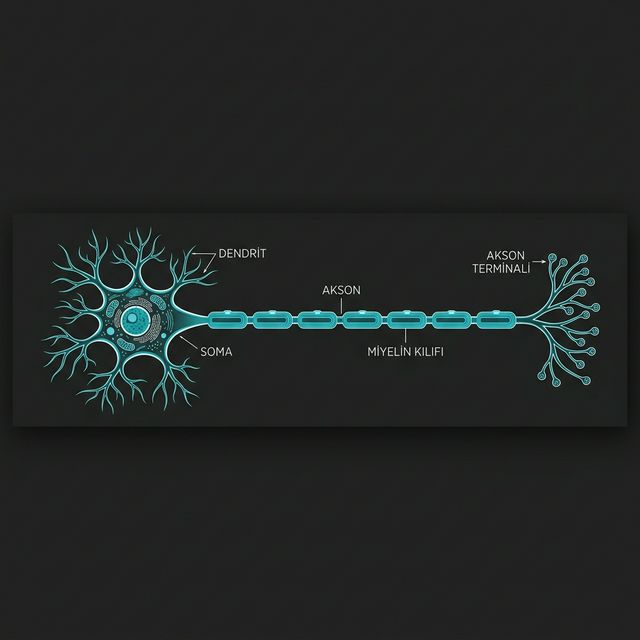

▪ 4.1 Nöron: Panoramik Yapı

Sınıflandırma
Multipolar
Bipolar
Psödo-uni
Unipolar
| İşlev | Yön | Tanım |
|---|---|---|
| Duyusal (Afferent) | Dış → İç | Çevresel sinyalleri merkeze taşır. |
| Motor (Efferent) | İç → Dış | Komutları yürütücülere iletir. |
| Aranöron | Merkez İçi | Ağ trafiğini yöneten merkezdir. |
▪ 4.2 GLİAL HÜCRELER: Lojistik Mantık
Nöronlar elektrokimyasal sinyal için optimize edilmiş aktif mimarlardır. Sinyal iletmekten bölünme yetilerini kaybetmişlerdir.
Glialar ise sistemin yaşam destek ünitesidir; izolasyon, enerji ve temizlik sağlayarak sistemi yeniler ve korurlar.
MSS GLİA HÜCRELERİ
| AstrositKan-beyin bariyeri kurar, nöron korur. |
| OligodendrositMSS çoklu miyelin izolasyonu sağlar. |
| MikrogliaBağışıklık ve temizlik bekçisidir. |
| EpendimalBOS üretimi ve akış yönetimi sağlar. |
PSS GLİA HÜCRELERİ
| Schwann HücresiPSS tekil miyelin ve onarım sağlar (1:1). |
| Satellit HücreGangliyon kimyasal dengesini kurar. |
| İzolasyon Farkı: PSS (1:1), MSS (1:Çok)